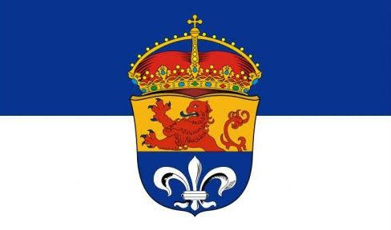

A short trip to my home town
Welcome to Darmstadt!😄
Darmstadt is a city in the federal state Hessen of Germany. It
isn't a huge city but it has a lot of beautiful places that are worth a visit. We have a lot of garden,
parks & old architecture.
You will find a few spots down
below which are worth mentioning but that are many more places to explore!
Places of interest
- Rosenhöhe
The Rosenhöhe is a historic park with an impressive collection of historic roses and a beautiful viewpoint
- Mathildenhöhe
The Mathildenhöhe is a UNESCO World Heritage Site and a centre of Art Nouveau architecture with the famous Wedding Tower and the Russian Chapel.
- Orangerie
The Orangery is a baroque palace building with a symmetrical garden parterre, which originally served as winter quarters for citrus plants
- Hundertwasserhaus
The Hundertwasserhaus is a colourful building designed by the Austrian artist Friedensreich Hundertwasser.
Gallery
- the Mathildenhöhe